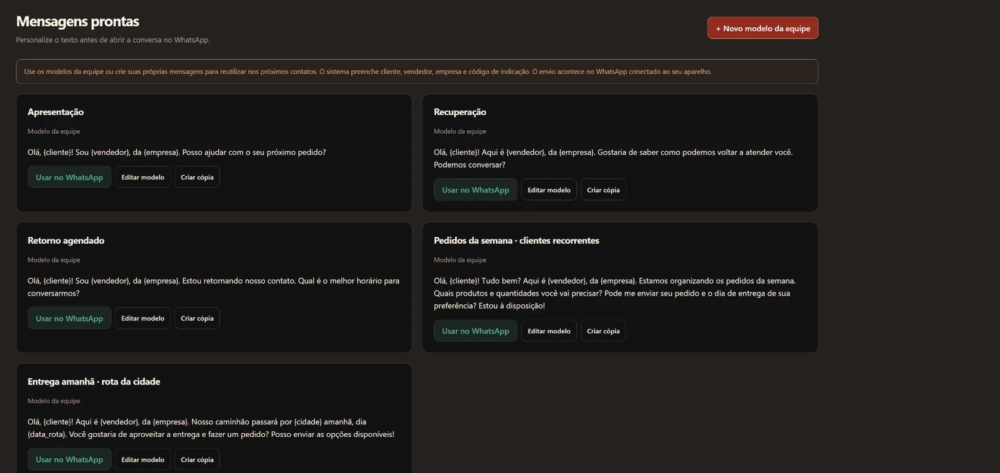

Planilhas e ferramentas desconectadas
Se cada informação está em um lugar, acompanhar o que acontece vira um quebra-cabeça.
Na Skye, a gente começa entendendo como sua empresa trabalha. Depois, desenvolve um sistema que ajuda a organizar a rotina, reunir informações e facilitar as decisões.

Quando as informações ficam espalhadas, até tarefas simples dão mais trabalho. Um sistema bem pensado ajuda a colocar a casa em ordem.
Se cada informação está em um lugar, acompanhar o que acontece vira um quebra-cabeça.
O mesmo trabalho feito várias vezes toma tempo da equipe e atrasa outras tarefas.
Se a ferramenta não combina com a rotina, ela acaba atrapalhando mais do que ajudando.
Uma mudança na gestão começa pela clareza. Veja situações comuns e o que um sistema desenhado para sua rotina pode ajudar a melhorar.
São exemplos de melhorias possíveis. Os recursos e resultados dependem do diagnóstico, do escopo contratado e da operação de cada empresa.
Cada projeto parte de uma necessidade real. Estas são algumas funcionalidades que podemos avaliar e desenvolver conforme o escopo.
Organize os fluxos comerciais, acompanhe pedidos e centralize informações da operação.
Possível móduloEstruture entradas, saídas e consultas para visualizar melhor seus produtos e recursos.
Possível móduloReúna históricos, cadastros e etapas de atendimento conforme sua rotina.
Possível móduloTransforme registros em indicadores e visualizações para apoiar decisões.
Possível móduloAvalie formas de reduzir tarefas repetitivas e tornar processos mais consistentes.
Possível móduloEstude conexões com ferramentas e serviços utilizados pela sua empresa, quando viáveis.
Possível módulo
Uma distribuidora não funciona como uma equipe de vendedores. E um pequeno comércio tem outras prioridades. Por isso, a primeira etapa é entender sua rotina antes de definir o que será desenvolvido.
Nada de oferecer uma lista pronta de funcionalidades sem conhecer seu negócio. O diagnóstico inicial nos ajuda a entender o que precisa funcionar melhor.
Ouvimos sua equipe, entendemos o funcionamento da empresa e identificamos dificuldades, prioridades e oportunidades de melhoria.
Definimos com você o que faz sentido desenvolver ou implantar, o escopo do projeto, o investimento inicial e a mensalidade.
Construímos e validamos a solução, orientamos sua utilização e avaliamos melhorias futuras conforme as condições contratadas.
Agende uma visita presencial. A Skye pode ir até o seu negócio para conhecer a rotina de perto, conversar com a equipe e fazer uma consultoria sobre as reais necessidades da operação.
Visitas presenciais mediante agendamento e confirmação de disponibilidade.
Quero agendar uma visitaA proposta considera o que você realmente precisa, o trabalho de desenvolvimento e os serviços mensais combinados. Tudo é explicado antes de começar.
Solicitar orçamento personalizadoPlanejamento, construção, personalização e configuração da solução, conforme o escopo aprovado.
Sob orçamentoUtilização do sistema e serviços recorrentes previstos no contrato, como hospedagem, manutenção e suporte.
Conforme o projetoEstas são telas de sistemas que desenvolvemos: gestão, vendas, estoque, relatórios e até ferramentas para equipes comerciais. Clique nas imagens para conhecer melhor.
Algumas imagens são de ambientes de demonstração. Cada solução tem seu próprio formato, conforme a necessidade da empresa.
Vamos conversar sobre o seu projetoAlgumas respostas para ajudar você a entender como funciona contratar um sistema sob medida.
Ainda tem dúvidas? Fale com a SkyeSim. Primeiro procuramos conhecer a realidade e os desafios da sua empresa. A partir disso definimos o escopo em conjunto, que pode incluir recursos próprios, componentes reutilizáveis e integrações conforme a viabilidade técnica e comercial.
O modelo principal combina investimento inicial para desenvolvimento ou implantação e uma mensalidade para a utilização e os serviços recorrentes contratados. Valores e condições são definidos na proposta.
Sim, novas demandas podem ser avaliadas durante a utilização. Prazos e custos de evoluções são definidos separadamente, conforme o contrato e o escopo de cada solicitação.
Avaliamos cada demanda para identificar se ela está dentro da nossa capacidade técnica e se um sistema personalizado é a melhor solução para o caso.
Sim, é possível solicitar uma visita ao negócio em Socorro (SP) e região. O agendamento depende de confirmação de disponibilidade e alinhamento prévio.
O prazo varia com a complexidade e o escopo. Uma estimativa mais confiável é apresentada após entender os processos e funcionalidades necessários.
Conte o que você precisa melhorar. Podemos fazer um diagnóstico inicial e, em Socorro ou região, agendar uma visita ao seu negócio.